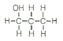
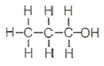
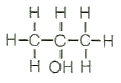
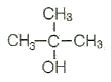
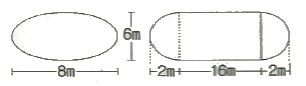

위험물산업기사 (2014-09-20 기출문제)
1과목: 일반화학
1. KNO3 의 물에 대한 용해도는 70℃에서 130 이며 30℃에서 40 이다. 70℃ 의 포화용액 260g 을 30℃ 로 냉각시킬 때 석출되는 KNO3 의 양은 약 얼마인가?
- 92g
- 101g
- 130g
- 153g
(정답률: 72%)

2. 벤젠을 약 300℃, 높은 압력에서 Ni 촉매로 수소와 반응시켰을 때 얻어지는 물질은?
- Cyclopentane
- Cyclopropane
- Cyclohexane
- Cyclooctane
(정답률: 80%)
3. 다음 작용기 중에서 메틸(methyl)기에 해당하는 것은?
- -C2H5
- -COCH3
- -NH2
- -CH3
(정답률: 77%)
4. 탄소수가 5개인 포화탄화수소 펜탄의 구조이성질체 수는 몇 개인가?
- 2개
- 3개
- 4개
- 5개
(정답률: 83%)
5. 다음 중 3차 알코올에 해당되는 것은?




(정답률: 77%)
6. 구리선의 밀도가 7.81g/mL 이고, 질량이 3.72g 이다. 이 구리선의 부피는 얼마인가?
- 0.48
- 2.09
- 1.48
- 3.09
(정답률: 62%)
7. 수소 5g 과 산소 24g 의 연소반응 결과 생성된 수증기는 0℃, 1기압에서 몇 L 인가?
- 11.2
- 16.8
- 33.6
- 44.8
(정답률: 49%)
8. 1기압의 수소 2L 와 3기압의 산소 2L 를 동일 온도에서 5L 의 용기에 넣으면 전체 압력은 몇 기압이 되는가?
- 4/5
- 8/5
- 12/5
- 16/5
(정답률: 77%)
9. 결합력이 큰 것부터 작은 순서로 나열한 것은?
- 공유결합 > 수소결합 > 반데르발스결합
- 수소결합 > 공유결합 > 반데르발스결합
- 반데르발스결합 > 수소결합 > 공유결합
- 수소결합 > 반데르발스결합 > 공유결합
(정답률: 88%)
10. 어떤 물질 1g 을 증발시켰더니 그 부피가 0℃, 4atm에서 329.2mL 였다. 이 물질의 분자량은? (단, 증발한 기체는 이상기체라 가정한다.)
- 17
- 23
- 30
- 60
(정답률: 64%)
11. 물 450g 에 NaOH 80g 이 녹아있는 용액에서 NaOH 의 몰분율은? (단, Na 의 원자량은 23 이다.)
- 0.074
- 0.178
- 0.200
- 0.450
(정답률: 68%)
12. 원자 A 가 이온 A2+ 로 되었을 때의 전자수와 원자번호 n 인 원자 B 가 이온 B3- 으로 되었을 때 갖는 전자수가 같았다면 A 의 원자번호는?
- n - 1
- n + 2
- n - 3
- n + 5
(정답률: 79%)
13. 커플링(coupling) 반응시 생성되는 작용기는?
- -NH2
- -CH3
- -COOH
- -N = N-
(정답률: 82%)
14. H2S + I2 → 2HI + S 에서 I2의 역할은?
- 산화제이다.
- 환원제이다.
- 산화제이면서 환원제이다.
- 촉매역할을 한다.
(정답률: 69%)
15. 다음 중 단원자 분자에 해당하는 것은?
- 산소
- 질소
- 네온
- 염소
(정답률: 82%)
16. 수소 1.2몰과 염소 2몰이 반응할 경우 생성되는 염화수소의 몰수는?
- 1.2
- 2
- 2.4
- 4.8
(정답률: 76%)
17. 중크롬산칼륨(다이크롬산칼륨)에서 크롬의 산화수는?
- 2
- 4
- 6
- 8
(정답률: 78%)
18. 다음의 화합물 중 화합물 내 질소분율이 가장 높은 것은?
- Ca(CN)2
- NaCN
- (NH2)2CO
- NH4NO3
(정답률: 60%)
19. 중성원자가 무엇을 잃으면 양이온으로 되는가?
- 중성자
- 핵전하
- 양성자
- 전자
(정답률: 90%)
20. 이산화황이 산화제로 작용하는 화학반응은?
- SO2 + H2O → H2SO4
- SO2 + NaOH → NaHSO3
- SO2 + 2H2S → 3S + 2H2O
- SO2 + Cl2 + 2H2O → H2SO4 + 2HCl
(정답률: 71%)
2과목: 화재예방과 소화방법
21. 위험물안전관리법령상 옥외소화전설비의 옥외소화전이 3개 설치되었을 경우 수원의 수량은 몇 m3 이상이 되어야 하는가?
- 7
- 20.4
- 40.5
- 100
(정답률: 87%)
22. 불연성기체로서 비교적 액화가 용이하며 안전하게 저장할 수 있으며 전기절연성이 좋아 C급 화재에 사용되기도 하는 기체는?
- N2
- CO2
- Ar
- He
(정답률: 88%)
23. 할로겐화물소화설비 기준에서 하론 2402 를 가압식 저장 용기에 저장하는 경우 충전비로 옳은 것은?
- 0.51 이상 0.67 이하
- 0.7 이상 1.4 미만
- 0.9 이상 1.6 이하
- 0.67 이상 2.75 이하
(정답률: 52%)
24. 폐쇄형 스프링클러 헤드는 설치 장소의 평상시 최고 주위 온도에 따라서 결정된 표시온도의 것을 사용해야 한다. 설치 장소의 최고 주위온도가 28℃ 이상 39℃ 미만 일 때, 표시 온도는?
- 58℃ 미만
- 58℃ 이상 79℃ 미만
- 79℃ 이상 121℃ 미만
- 121℃ 이상 162℃ 미만
(정답률: 85%)
25. 위험물안전관리법령상 옥외소화전설비에서 옥외소화전함은 옥외소화전으로부터 보행거리 몇 m 이하의 장소에 설치하여야 하는가?
- 5m 이내
- 10m 이내
- 20m 이내
- 40m 이내
(정답률: 72%)
26. 가연물이 되기 쉬운 조건으로 가장 거리가 먼 것은?
- 열전도율이 클수록
- 활성화에너지가 작을수록
- 화학적 친화력이 클수록
- 산소와 접촉이 잘 될수록
(정답률: 84%)
27. 고체연소에 대한 분류로 옳지 않은 것은?
- 혼합연소
- 증발연소
- 분해연소
- 표면연소
(정답률: 80%)
28. 주성분이 탄산수소나트륨인 소화약제는 제 몇 종분말소화약제인가?
- 제1종
- 제2종
- 제3종
- 제4종
(정답률: 77%)
29. 이산화탄소소화설비의 소화약제 방출방식 중 전역방출방식 소화설비에 대한 설명으로 옳은 것은?
- 발화위험 및 연소위험이 적고 광대한 실내에서 특정장치나 기계만을 방호하는 방식
- 일정 방호구역 전체에 방출하는 경우 해당 부분의 구획을 밀폐하여 불연성가스를 방출하는 방식
- 일반적으로 개방되어 있는 대상물에 대하여 설치하는 방식
- 사람이 용이하게 소화활동을 할 수 있는 장소에는 호스를 연장하여 소화활동을 행하는 방식
(정답률: 80%)
30. 펌프와 발포기의 중간에 설치된 벤투리관의 벤투리 작용과 펌프 가압수의 포 소화약제 저장탱크에 대한 압력에 의하여 포 소화약제를 흡입 · 혼합하는 방식은?
- 프레셔 프로포셔너
- 펌프 프로로셔너
- 프레셔 사이드 프로포셔너
- 라인 프로포셔너
(정답률: 66%)
31. 제4류 위험물의 저장 및 취급시 화재예방 및 주의사항에 대한 일반적인 설명으로 틀린 것은?
- 증기의 누출에 유의할 것
- 증기는 낮은 곳에 체류하기 쉬우므로 조심할 것
- 전도성이 좋은 석유류는 정전기 발생에 유의할 것
- 서늘하고 통풍이 양호한 곳에 저장할 것
(정답률: 67%)
32. 인화성 액체의 화재를 나타내는 것은?
- A급 화재
- B급 화재
- C급 화재
- D급 화재
(정답률: 88%)
33. 다음 중 제5류 위험물의 화재시에 가장 적당한 소화방법은?
- 질소가스를 사용한다.
- 할로겐화합물을 사용한다.
- 탄산가스를 사용한다.
- 다량의 물을 사용한다.
(정답률: 86%)
34. 위험물제조소등에 설치하는 옥내소화전설비가 설치된 건축물에 옥내소화전이 1층에 5개, 2층에 6개가 설치되어 있다. 이때 수원의 수량은 몇 m3 이상으로 하여애 하는가?
- 19
- 29
- 39
- 47
(정답률: 90%)
35. 다음 중 C급 화재에 가장 적응성이 있는 소화설비는?
- 봉상강화액 소화기
- 포소화기
- 이산화탄소소화기
- 스프링클러설비
(정답률: 80%)
36. 소화기가 유류 화재에 적응력이 있음을 표시하는 색은?
- 백색
- 황색
- 청색
- 흑색
(정답률: 87%)
37. 위험물안전관리법령상 옥외소화전설비는 모든 옥외소화전을 동시에 사용할 경우 각 노즐 선단의 방수압력은 얼마 이상이어야 하는가?
- 100kPa
- 170kPa
- 350kPa
- 520kPa
(정답률: 89%)
38. 제조소 또는 취급소의 건축물로 외벽이 내화구조인 것은 연면적 몇 m2 를 1소요 단위로 규정하는가?
- 100m2
- 200m2
- 300m2
- 400m2
(정답률: 88%)
39. 처마의 높이가 6m 이상인 단층 건물에 설치된 옥내저장소의 소화설비로 고려될 수 없는 것은?
- 고정식 포소화설비
- 옥내소화전설비
- 고정식 이산화탄소소화설비
- 고정식 분말소화설비
(정답률: 74%)
40. 탄소 1mol 이 완전 연소하는 데 필요한 최소 이론공기량은 약 몇 L 인가? (단, 0℃, 1기압 기준이며, 공기 중 산소의 농도는 21vol% 이다.)
- 10.7
- 22.4
- 107
- 224
(정답률: 66%)
3과목: 위험물의 성질과 취급
41. 위험물안전관리법령에 따른 위험물제조소와 관련한 내용으로 틀린 것은?
- 채광설비는 불연재료를 사용한다.
- 환기는 자연배기방식으로 한다.
- 조명설비의 전선은 내화·내열전선으로 한다.
- 조명설비의 점멸스위치는 출입구 안쪽부분에 설치한다.
(정답률: 79%)
42. 산화프로필렌 300L, 메탄올 400L, 벤젠 200L를 저장하고 있는 경우 각각 지정수량배수의 총 합은 얼마인가?
- 4
- 6
- 8
- 10
(정답률: 74%)
43. 위험물안전관리법령상 제조소에서 위험물을 취급하는 건축물의 구조 중 내화구조로 하여야 할 필요가 있는 것은?
- 연소의 우려가 있는 기둥
- 바닥
- 연소의 우려가 있는 외벽
- 계단
(정답률: 84%)
44. 질산나트륨을 저장하고 있는 옥내저장소(내화구조의 격벽으로 완전히 구획된 실이 2 이상 있는 경우에는 동일한 실)에 함께 저장하는 것이 법적으로 허용되는 것은? (단, 위험물을 유별로 정리하여 서로 1m 이상의 간격을 두는 경우이다.)
- 적인
- 인화성고체
- 동식물유류
- 과염소산
(정답률: 71%)
45. 위험물의 운반용기 외부에 수납하는 위험물의 종류에 따라 표시하는 주의사항을 옳게 연결한 것은?
- 염소산칼륨 - 물기주의
- 철분 - 물기주의
- 아세톤 - 화기엄금
- 질산 - 화기엄금
(정답률: 66%)
46. 위험물이 물과 반응하였을 때 발생하는 가연성 가스를 잘못 나타낸 것은?
- 금속칼륨 - 수소
- 금속나트륨 - 수소
- 인화칼슘 - 포스겐
- 탄화칼슘 -아세틸렌
(정답률: 82%)
47. 다음 위험물의 저장 또는 취급에 관한 기술상의 기준과 관련하여 시·도의 조례에 의해 규제를 받는 경우는?
- 등유 2000L 를 저장하는 경우
- 중유 3000L 를 저장하는 경우
- 윤활유 5000L 를 저장하는 경우
- 휘발류 400L 를 저장하는 경우
(정답률: 82%)
48. 질산암모늄에 관한 설명 중 틀린 것은?
- 상온에서 고체이다.
- 폭약의 제조 원료로 사용할 수 있다.
- 흡습성과 조해성이 있다.
- 물과 반응하여 발열하고 다량을 가스를 발생한다.
(정답률: 62%)
49. 질산에 대한 설명으로 틀린 것은?
- 무색 또는 담황색의 액체이다.
- 유독성이 강한 산화성 물질이다.
- 위험물안전관리법령상 비중이 1.49 이상인 것만 위험물로 규정한다.
- 햇빛이 잘 드는 곳에서 투명한 유리병에 보관하여야 한다.
(정답률: 87%)
50. 위험물을 저장 또는 취급하는 탱크의 용량은?
- 탱크의 내용적에서 공간용적을 뺀 용적으로 한다.
- 탱크의 내용적으로 한다.
- 탱크의 공간용적으로 한다.
- 탱크의 내용적에 공간용적을 더한 용적으로 한다.
(정답률: 90%)
51. 위험물안전관리법령상 이송취급소 배관등의 용접부는 비파괴시험을 실시하여 합격하여야 한다. 이 경우 이송기지내의 지상에 설치되는 배관등은 전체 용접부의 몇 % 이상 발췌하여 시험할 수 있는가?
- 10
- 15
- 20
- 25
(정답률: 59%)
52. 위험물안전관리법령상 위험물제조소에 설치하는 “물기엄금” 게시판의 색으로 옳은 것은?
- 청색바탕 백색글씨
- 백색바탕 청색글씨
- 황색바탕 청색글씨
- 청색바탕 황색글씨
(정답률: 81%)
53. 다음 물질 중 인화점이 가장 낮은 것은?
- 디에틸에테르
- 이황화탄소
- 아세톤
- 벤젠
(정답률: 77%)
54. 다음 중 물과 접촉하였을 때 위험성이 가장 높은 것은?
- S
- CH3COOH
- C2H5OH
- K
(정답률: 82%)
55. 황린을 밀폐용기 속에서 260℃ 로 가열하여 얻은 물질을 연소시킬 때 주로 생성되는 물질은?
- P2O5
- CO2
- PO2
- CuO
(정답률: 85%)
56. 황이 연소할 때 발생하는 가스는?
- H2S
- SO2
- CO2
- H2O
(정답률: 81%)
57. 그림과 같은 타원형 탱크의 내용적은 약 몇 m3 인가?

- 453
- 553
- 653
- 753
(정답률: 78%)
58. 위험물안전관리법령에서 정의한 특수인화물의 조건으로 옳은 것은?
- 1기압에서 발화점이 100℃ 이상인 것 또는 인화점이 영하 10℃ 이하이고 비점이 40℃이하인 것
- 1기압에서 발화점이 100℃ 이하인 것 또는 인화점이 영하 20℃ 이하이고 비점이 40℃이하인 것
- 1기압에서 발화점이 200℃ 이상인 것 또는 인화점이 영하 10℃ 이하이고 비점이 40℃이하인 것
- 1기압에서 발화점이 200℃ 이상인 것 또는 인화점이 영하 20℃ 이하이고 비점이 40℃이하인 것
(정답률: 71%)
59. 다음 중 3개의 이성질체가 존재하는 물질은?
- 아세톤
- 톨루엔
- 벤젠
- 자일렌
(정답률: 74%)
60. 염소산칼륨의 성질이 아닌 것은?
- 황산과 반응하여 이산화염소를 발생한다.
- 상온에서 고체이다.
- 알코올보다는 글리세린에 더 잘 녹는다.
- 환원력이 강하다.
(정답률: 65%)